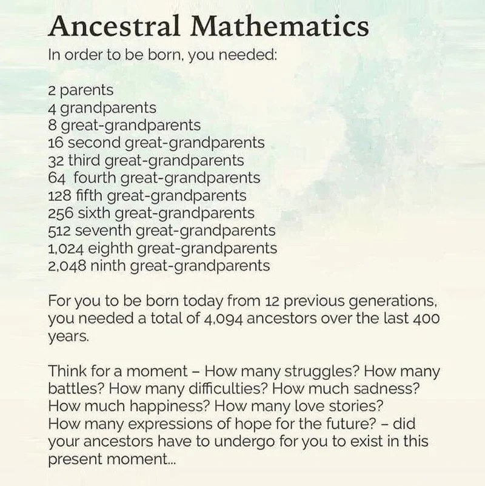

circadian rhythm
Optimize your Circadian Rhythm and Conquer Daylight Savings BluesBy Adam Wenguer3 min read
Read article 
I recently posted this image on our @ElementHealth social media page.

This concept resonated deeply with me, especially as the year 2020 was coming to a close and so many people had experienced heavy struggles for the past 10-11 months. I felt their pain as I received countless emails each day from individuals looking for support with this new stressor that appeared in our world. The common theme was a heavy, lingering stress rooted in these new fears that we were never previously exposed to.
I knew that our full spectrum CBD products could be one helpful part of a daily wellness routine for members of our Element family. However, I wanted to couple that with sharing my perspectives on healing and creating alignment and true balance in our daily lives not just physically, but also on a psychological and spiritual level.
I believe that our CBD products can help bring us back to our most natural state of growth, adaptability and receptivity. However the phrase "bring us back", insinuates that we have veered away or deviated from this state to begin with. So how did this happen?
Modern day living, especially in large cities, has major conveniences and a host of positive attributes such as greater availability and easy access to food/water, transportation, different jobs or careers, while also surrounding us by a large number of people (social benefits).
However, with these conveniences our physical and mental challenges are greatly diminished. And it's those exact challenges that build resilience and greater adaptability.
Focusing on the first image, I am reminded of exactly that: the durability of our ancestors and what they endured in way more trying times to ensure their future generations would survive and prosper. I get overwhelmed with a sense of gratitude as I think about this.
And I believe it is that gratitude, that perspective of appreciation, combined with an intense desire to challenge ourselves that allows us to grow and flourish like those who came before us. But how does one maintain this attitude of gratitude on a daily basis? And how do we challenge ourselves mentally and spiritually while maintaining this gratitude in order to build pathways in the brain that lead to a healthier, stronger, more resilient connection to ourselves, to nature and to our source of all life?
If we want to make lasting changes to how we think, feel and live our life then it's necessary to break old habits. Specific habits that prevent us from expressing our highest form of self are like chains keeping us bound to the past and to a destiny that is out of our control. Habits begin in our conscious mind as we generally choose this thought, feeling or action but quickly they become part of our subconscious "programming". Just think about driving a car if you want to realize how powerful our subconscious mind is. We can drive from one part of town to the other seamlessly without realizing that we are pushing the gas pedal, breaking, using turn signals, and checking our mirrors or cameras. We barely have a conscious thought of what we are doing on the road because we are so highly programmed through repetition to get from point A to point B.
This is why in order to break or change specific habits or patterns, we need to affect the subconscious mind. There are 3 primary ways to do this and when used in combination, it greatly enhances our ability to make deep changes to our mind, our entire nervous system and body, and our lives on every level.
1) Repetition - by repetitively ceasing that activity or thought pattern, in time it will be eliminated from our routine. Think - "Use it or lose it." The same goes for creating a new habit. The more often we choose to think, say or do something, the more likely it will become part of our daily routine.
2) Timing - The first 20 minutes after we wake and the last 20 minutes prior to sleep, our brain is in an alpha brainwave state (Dr. Bruce Lipton refers to it as Twilight Reverie). This is the state where our subconscious mind is most receptive to absorbing information and signals it as our "truth" or "on" switch to every cell of our body.
3) Intensity - Neuroscientists have discovered that the more intense a stimulus, meaning the greater effect it has on our biomechanical and psychological state, the more lasting and pronounced impact it will have on our neural pathways.
Recognizing these three concepts and utilizing them together is key. By repetitively inducing a specific state that creates an intense emotional response at the proper times each day, we can make powerful and drastic changes to our lives in a short period of time.
One of the most common habits that holds us back from experiencing gratitude and creating new empowering habits is the incessant need to check our phones, especially first thing in the morning.
Make a point to not look at your phone for the first 30-60 minutes of your day. The longer the better. Make sure to use the techniques described below before you jump on your cell phone, computer or any sort of entertainment (comfort).
My personal favorite technique to start my day is to write in a gratitude journal (which I discussed on the Ben Greenfield podcast). You can use any blank notepad or find a specific gratitude journal widely available online. I consider this time to be the most sacred part of my day. Of course we tend to feel groggy right when we wake but if you start this new habit, you will begin to look forward to this exact moment. This is your time of silence, peace, connection to your source and you'll soon realize this is the crown jewel towards effectively creating a life of joy and deeper meaning.
The moment you wake, throw some water on your face and then grab that gratitude journal. (That's fine if you take it to the restroom).
Write down 2-3 things you are extremely grateful for and 2-3 things you want to create in your life. The more specific you get the better.
For example - "Today, I am grateful for my loving father, who showed me how to see beauty and art in all things. Today I am grateful for the vibrant health I experience each day, as every cell, gland, organ and bodily system is optimized and aligned. Today I am grateful to be able to train in Jiu Jitsu and Martial Arts, further building my body, mind, spirit connection"
But really, it could be anything in your life - from your new born baby or your best friend, to your car or your cozy bed. Try to write something new each day or feel free to repeat those things that are most valuable to you. Be exceptionally mindful of what you want to deeply reinforce your appreciation for. Here is where the intensity factor comes in. The goal here is not to simply write it down but to write it and feel it deep in your bones. Experience that immense gratitude as you write it. While this is not the easiest task to create an emotion on the spot, remember - we want that challenge in the moment to create the necessary growth towards a state of gratitude.
My Father passed exactly 2 years ago to the day that I am completing this blog. Losing anyone you are extremely close to is one of the most traumatic experiences we can have as a human. A grieving process is to be expected but too often I see death affecting loved ones with such fear, negativity and sadness that it forever impacts their own lives. We start believing that we are destined to fulfill the same path because we share those same genes. Fear and a sense of loneliness can overwhelm our minds. Just thinking about them can cause incredible sadness or depression, sometimes to the point that we never fully get over it. Even if the grieving process has passed, a new habit has been created and one that isn't conducive to our health, growth and well-being.
One thing that brings me immense joy each day (as it did 2 years ago), is experiencing true gratitude for my father. I write down how blessed I am to have known this man for 35 beautiful years. I write down the lessons he taught me, the experiences we shared and the traits he bestowed upon me which make me a better person. I write how grateful I am and then I breathe it deep into my soul. Sometimes a tear drops down my cheek, but it's a tear of honor and appreciation. It's an emotion that allows me to be a better husband and father to my pups (and soon to a son), a more caring friend, a more grateful son and a person with more empathy for all of those around me.
We always have a more intense emotional response after a life changing experience (like someone close to us dying), but what if we could foster an equally intense emotional response towards a perspective of gratitude each day of our life.
Remember: Intensity + Repetition + Timing = fast track to building or breaking a habit.
Treat this new morning activity as an absolute necessity. Know that every morning you reach for your journal instead of the phone, you are breaking old and unhelpful habits while simultaneously paving the way for an immensely purposeful and satisfying day. Social media, email/txt messages, television and netflix can all wait till any other time of day. Starting each and every early morning with planting seeds of gratitude, you will instantly notice that you are creating a healthier relationship to yourself and those around you.
In our next email we will discuss the 2nd part of this morning practice which includes using this same gratitude journal to create new belief systems, choices and scenarios in our life while using mindfulness meditation to achieve laser focus in order to achieve them.
"It is not the strongest of the species that survives,
nor the most intelligent that survives.
It is the one that is the most adaptable to change."
When we understand the importance of our Circadian Rhythm being controlled by daylight and darkness cycles, we begin to realize how artificial light and especially electronic screens can clearly disrupt this crucial cycle.

Absolutely Not! Amazon currently has prohibited the sale of legitimate CBD extracts. So now we are seeing a ton of shady companies looking to capitalize on a customer base that isn't properly educated on what to look for

Full spectrum CBD, grown on family farms and third-party tested in every batch.


These statements have not been evaluated by the Food and Drug Administration. These products are not intended to diagnose, treat, cure or prevent any disease. All products contain no more than 0.3% Δ9-THC on a dry-weight basis as permitted under the 2018 Farm Bill. You must be 21 or older to purchase. Not for use by pregnant or nursing individuals. Consult a physician before use if you have a medical condition or take prescription medications. Shipping restricted where prohibited by state law. © 2026 Element Health LLC.